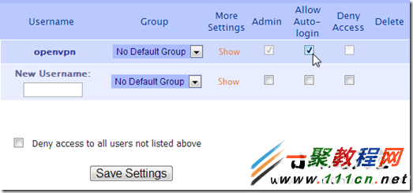
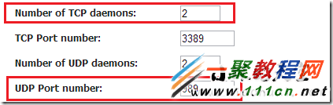
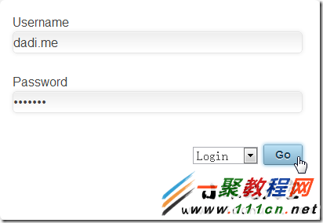
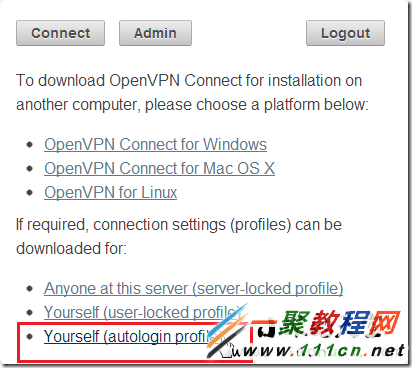
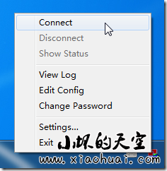

VPS一键搭建OpenVPN的方法详解
www.111cn.net 编辑:flyfox 来源:转载
VPS一键搭建OpenVPN我们是在7月份有介绍过一篇相关的文章，当时那篇是一段脚本就搞定了，下面我们再来看一篇更详细的教程，大家一起来看看VPS一键搭建OpenVPN方法吧。
据说现在PPTP、L2TP之类的都不怎么灵光了，而自建的OpenVPN有时候貌似也连接不上（例如之前的文章，就不少人反应装上无法连接），这篇文章介绍的是使用OpenVPN
Access Server免费版来搭建抗干扰VPN；
OpenVPN Access Server免费版虽然只支持2个用户同时连接，但是自用完全是OK的，并且安装也非常简便。下面来说说教程。
【下载对应软件】
根据你VPS的系统，下载对应的软件，下载页面为：htt
ps://openvpn.net/index.php/access-server/download-openvpn-as-sw.html。
唔，发现上面的地址需要爬墙方能打开，在下面列一些常见系统的软件下载地址：
CentOS 5 32bit：http://swupdate.openvpn.org/as/openvpn-as-1.8.4-CentOS5.i386.rpm
CentOS 5 64bit：http://swupdate.openvpn.org/as/openvpn-as-1.8.4-CentOS5.x86_64.rpm
Ubuntu 10 32bit：http://swupdate.openvpn.org/as/openvpn-as-1.8.4-Ubuntu10.i386.deb
Ubuntu 10 64bit：http://swupdate.openvpn.org/as/openvpn-as-1.8.4-Ubuntu10.amd_64.deb
Ubuntu 10 对应 Debian 6 系统；其他的自行打开上面页面下载。
【软件安装命令】
Debian和Ubuntu软件安装命令：dpkg -i openvpn-as-1.8.4-Ubuntu10.i386.deb
CentOS软件安装命令：rpm -ivh openvpn-as-1.8.4-CentOS5.i386.rpm
【Wget下载和安装】
Wget之类的下载软件，然后用上面的安装命令安装即可。CentOS 5 64bit的安装示例：
1.wget http://swupdate.openvpn.org/as/openvpn-as-1.8.4-CentOS5.x86_64.rpm
2.rpm -ivh openvpn-as-1.8.4-CentOS5.x86_64.rpm
3.passwd openvpn
上面最后一条命令用于设置openvpn帐户的密码，输入2遍。
【管理页面，配置】
安装成功之后，会自动打印OpenVPN的管理地址，和客户端登录地址：
https://ip:943/admin/
https://ip:943/
首先访问https://ip:943/admin/，用户名为openvpn，密码则是下载之后设置的密码。
首先左侧，User Management下面的User Permissions，在openvpn用户名的右侧，有个Allow Auto-login的选项，勾选上。

之后点击下面的Save Settings；当然可以自行添加另外的用户名，但是2个用户的限制，貌似就毫无必要了。
接着，左侧的Configuration下面的Server network Settings。

TCP Port number和UDP Port number按照上图中，分别设置为3389和989；其他端口貌似也是可以的，这个请自行尝试。
最后重启服务。大地貌似没找到重启的选项，额，傻瓜操作，在管理首页，先停止服务，然后再启动。
【OpenVPN使用】
https://ip:943/，访问这个地址，输入用户名和密码，选择Login（不是默认的Connect）登录：

下载ovpn配置文件：

下载保存，然后复制到目录，或者直接复制到 C:Program FilesOpenVPNconfig 目录下；
当然，这个目录出现有个前提条件，你得先安装了OpenVPN的客户端
下载地址 http://openvpn.net/index.php/open-source/downloads.html 根据自己的系统下载相应版本。
Win7用户需要以管理员身份运行OpenVPN GUI。右键右下角的图标，点击Connect就可以了。

红色图标表示未连接状态，黄色则是正在连接中，绿色图标即已连接上。
这个方法测试过，是可以正常连接的。去ip138.com查看本地IP是否是VPS的IP地址。
【结语】
教程到这里就结束了，这篇文章在2013年3月6日的时候写的，大地确保在发表的时候，这个方法是有效的（OpenVPN抗干扰），至少我这边可以。
OpenVPN Access Server还有众多功能，IP地址 + 端口号，再加上目录admin进入管理页面，有更多设置可以自行琢磨。